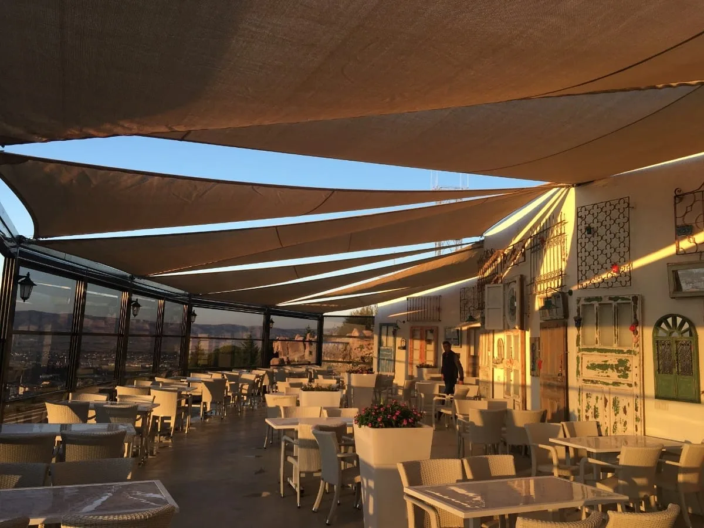

Asma Germe
Sistemleri
Geniş açıklıkları hafif, güçlü ve dikkat çekici mimari formlarla örten membran yapılar.
Hafif yapıyla
güçlü mimari.
Asma germe sistemleri, büyük alanları minimum taşıyıcıyla örterken yapıya karakter ve güçlü bir görsel kimlik kazandırır.
Alan ölçüsü, rüzgâr yükü, drenaj ve kullanım senaryosu birlikte değerlendirilir. Taşıyıcı sistemden membran seçimine kadar her detay projeye özel çözülür.
Asma germe
galerisi.
Farklı ölçü, form ve kullanım alanlarına göre uygulanan membran sistemler.
Sık sorulan
sorular.
Mimari membran sistemlerde kullanım alanı ve projelendirme kriterleri.
Asma germe sistemleri nerelerde kullanılır?
Otopark, kafe ve restoran, spor tesisi, okul, sosyal alan ve etkinlik alanı gibi geniş açıklıklarda kullanılabilir.
Membran sistem nasıl projelendirilir?
Alan ölçüsü, zemin ve ankraj koşulları, rüzgâr yükü, drenaj, gölgeleme hedefi ve mimari form birlikte değerlendirilir.